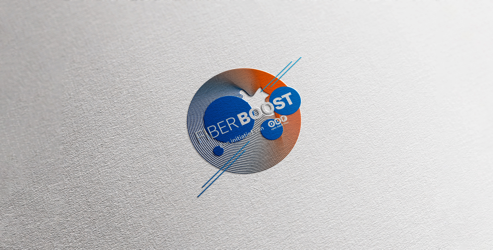
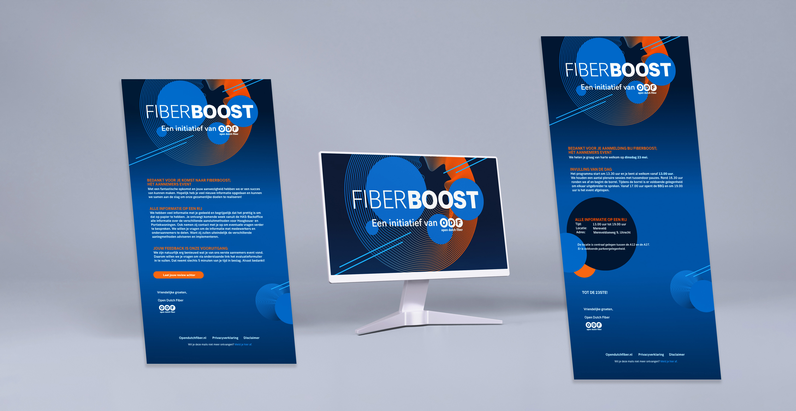
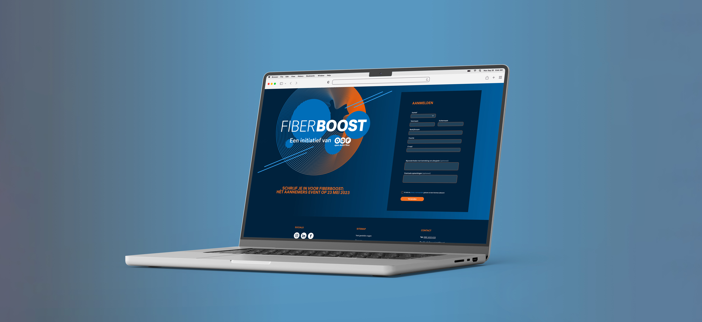
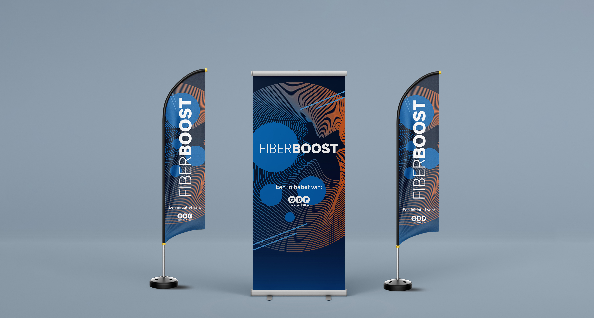
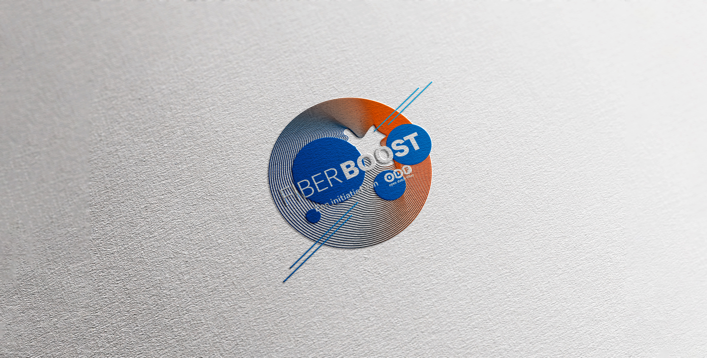
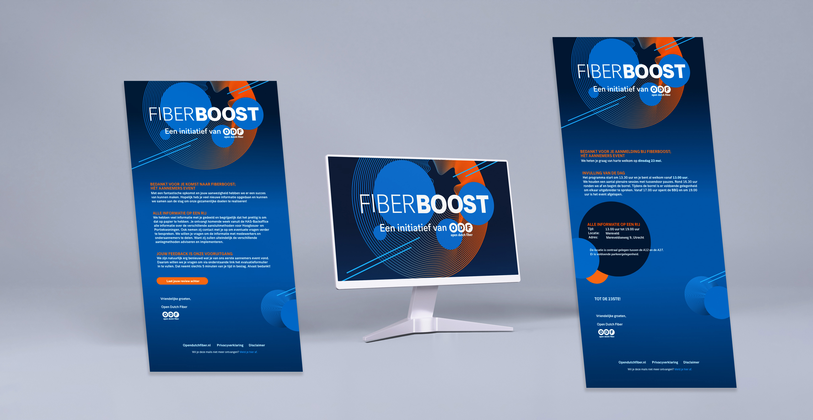
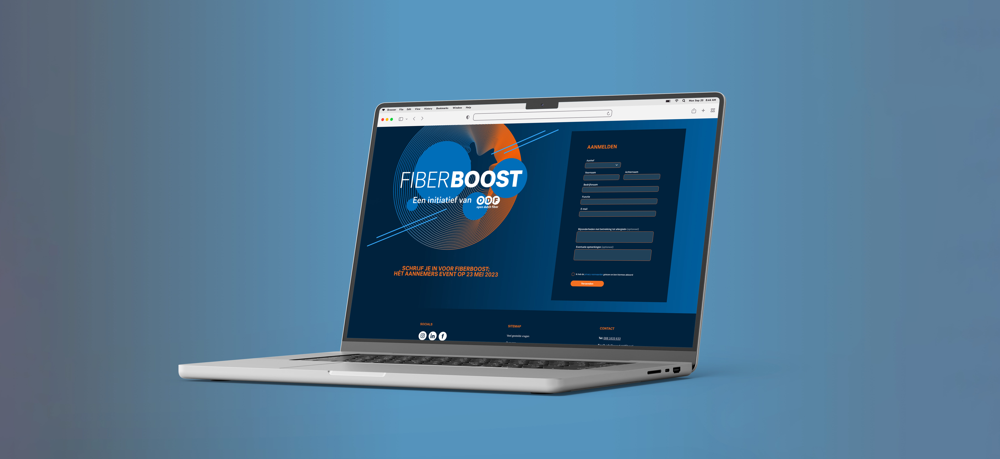
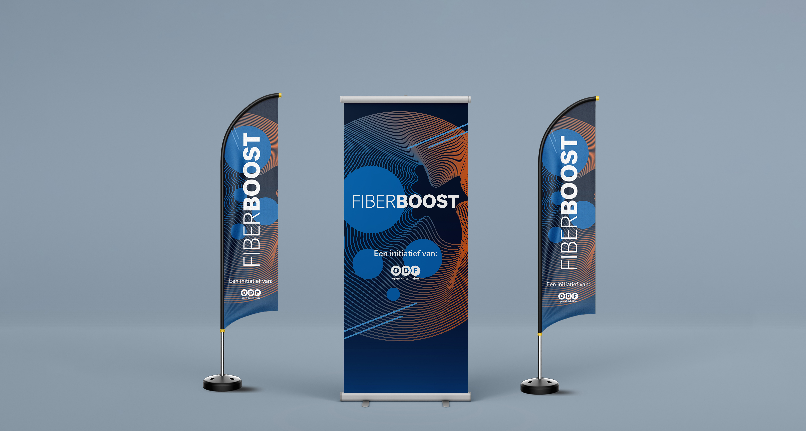

In mijn dienstverband bij The Others kreeg ik de opdracht om materialen te ontwikkelen voor het evenement FiberBoost van Open Dutch Fiber (ODF). Mijn taken omvatten het toevoegen van pagina’s aan de ODF-website in de stijl van FiberBoost, het opzetten van e-mailtemplates en het ontwerpen van diverse stationary items, zoals vlaggen en banners.
 






